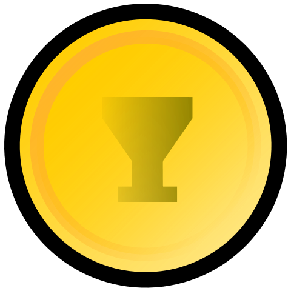
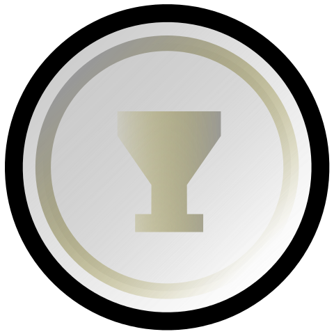
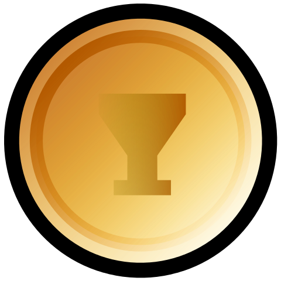

Sarah Sjöström - szwedzka rekordzistka
03.01.2020 | 16:54:28 | Grzegorz Majdan
Sarah Sjöström (ur. 17 sierpnia 1993 w Rönninge, w gminie Salem) – szwedzka pływaczka specjalizująca się w stylu motylkowym i dowolnym, mistrzyni olimpijska, siedmiokrotna mistrzyni świata i dwunastokrotna mistrzyni Europy, rekordzistka świata na 50 i 100 m stylem motylkowym oraz 50 i 100 m stylem dowolnym.
Magazyn Swimming World przyznał jej w 2017 roku tytuł Najlepszej Pływaczki na Świecie, a w latach 2015 i 2017-2018 ogłosił ją Najlepszą Pływaczką w Europie.
Sjöström jest pierwszą zawodniczką, która przepłynęła na długim basenie 50 m stylem motylkowym poniżej 25 sekund i 100 m stylem dowolnym poniżej 52 sekund.
Kariera pływacka
2008
Mając niespełna 15 lat, z czasem 58,44 zdobyła złoty medal na dystansie 100 m stylem motylkowym podczas mistrzostw Europy w Eindhoven.
Kilka miesięcy później startowała na igrzyskach olimpijskich w Pekinie. Na dystansie 100 m stylem motylkowym uzyskała czas 59,08 i zajęła 27. miejsce. W konkurencji 100 m stylem grzbietowym była dwudziesta dziewiąta. Płynęła także w sztafecie 4 × 100 m stylem zmiennym, która zakwalifikowała się do finału, ale została w nim zdyskwalifikowana ze względu na falstart na ostatniej zmianie.
2009
Podczas mistrzostw świata w Rzymie w półfinale 100 m stylem motylkowym czasem 56,44 pobiła rekord świata. W finale tej konkurencji zdobyła złoty medal i poprawiła rekord globu, uzyskawszy czas 56,06. Na 50 m stylem motylkowym z czasem 25,66 zajęła szóste miejsce.
2010
Na mistrzostwach w Budapeszcie obroniła tytuł mistrzyni Europy w konkurencji 100 m stylem motylkowym (57,32). Sjöström wywalczyła też medale w sztafetach 4 × 100 m stylem zmiennym (srebro) i 4 × 100 m stylem dowolnym (brąz). Na 50 m stylem motylkowym i 100 m stylem dowolnym była czwarta, uzyskawszy odpowiednio czasy 26,14 i 54,16.
2011
Podczas mistrzostw świata w Szanghaju w konkurencji 50 m stylem motylkowym uplasowała się na czwartej pozycji ex aequo z Chinką Lu Ying, kiedy obie pływaczki zakończyły wyścig z rezultatem 25,87. Na dystansie dwukrotnie dłuższym również była czwarta (57,38). Tuż za podium znalazła się także na 200 m stylem dowolnym, gdzie uzyskała czas 1:56,41.
2012
W maju na mistrzostwach Europy w Debreczynie zdobyła trzy medale. Sjöström zwyciężyła w konkurencjach 100 m stylem dowolnym i 50 m stylem motylkowym, uzyskawszy odpowiednio czasy 53,61 i 25,64. W sztafecie kraulowej 4 × 100 m wywalczyła srebro.
Dwa miesiące później, podczas igrzysk olimpijskich w Londynie na dystansie 100 m stylem motylkowym zajęła czwarte miejsce z czasem 57,17. W konkurencji 100 m stylem dowolnym była dziewiąta (53,93). W półfinale 200 m stylem dowolnym uzyskała czas 1:58,12 min i nie zakwalifikowała się do finału, plasując się ostatecznie na 12. pozycji. Na 50 m kraulem zajęła 14. miejsce (25,08). Sjöström płynęła także w sztafetach 4 × 100 m stylem dowolnym i zmiennym.
2013
W lipcu na mistrzostwach świata w Barcelonie na dystansie 100 m stylem motylkowym zdobyła swój drugi tytuł mistrzyni globu, uzyskawszy czas 56,53. W półfinale 100 m stylem dowolnym ustanowiła nowy rekord Szwecji (52,87), po raz pierwszy w swojej karierze płynąc poniżej 53 sekund. W finale tej konkurencji wywalczyła srebrny medal (52,89). Na dystansach 50 i 200 m stylem dowolnym była czwarta, uzyskawszy odpowiednio czasy 24,45 s i 1:56,63 min.
2014
5 lipca podczas mistrzostw Szwecji w Borås czasem 24,43 s pobiła rekord świata na dystansie 50 m stylem motylkowym. Sjöström poprawiła poprzedni rekord aż o 0,64 s i stała się jednocześnie pierwszą zawodniczką, która uzyskała w tej konkurencji rezultat poniżej 25 sekund.
Miesiąc później, na mistrzostwach Europy w Berlinie zdobyła siedem medali. Na dystansie 100 m stylem dowolnym wywalczyła złoto i ustanowiła nowy rekord mistrzostw i Szwecji (52,67). W półfinale 50 m stylem motylkowym pobiła rekord mistrzostw (24,87), a w finale tej konkurencji zwyciężyła z czasem 24,98. Złoty medal zdobyła także w sztafecie 4 × 100 m stylem dowolnym. Na dystansie 50 m stylem dowolnym była druga, uzyskawszy czas 24,37 W konkurencji 100 m stylem motylkowym również zdobyła srebro, przegrywając o 0,01 s z Dunką Jeanette Ottesen. Sjöström płynęła także w sztafetach 4 × 200 m stylem dowolnym i 4 × 100 m stylem zmiennym, które w finale uplasowały się na drugich miejscach.
2016
7 sierpnia 2016 roku startując na igrzyskach olimpijskich w Rio de Janeiro na dystansie 100 m stylem motylkowym zdobyła swój pierwszy olimpijski medal. Wyścig ukończyła na pierwszym miejscu z czasem (55,48), bijąc przy tym rekord olimpijski oraz własny rekord świata ustanowiony rok wcześniej na mistrzostwach świata w Kazaniu. Zdobyła także srebro w konkurencji 200 m stylem dowolnym, w finale czasem 1:54,08 poprawiając rekord Szwecji. Swój trzeci medal olimpijski wywalczyła na dystansie dwukrotnie krótszym, gdzie z czasem 52,99 uplasowała na trzeciej pozycji.
2017
Podczas mistrzostw świata w Budapeszcie Sjöström na pierwszej zmianie sztafety 4 × 100 m stylem dowolnym czasem 51,71 ustanowiła rekord świata na dystansie 100 m stylem dowolnym i jako pierwsza kobieta w historii uzyskała wynik poniżej 52 sekund. Następnego dnia, zdobyła swój czwarty tytuł mistrzyni świata w konkurencji 100 m stylem motylkowym i pobiła rekord mistrzostw (55,53). W finale 100 m stylem dowolnym z czasem 52,31 wywalczyła srebrny medal. 29 lipca obroniła tytuł mistrzyni świata na 50 m stylem motylkowym i rezultatem 24,60 ustanowiła nowy rekord mistrzostw, wyprzedzając o 0,78 s drugą na mecie, Holenderkę Ranomi Kromowidjojo. Godzinę później, w półfinałach 50 m stylem dowolnym pobiła rekord świata w tej konkurencji, uzyskawszy czas 23,67. W finale 50 m kraulem zdobyła złoty medal z drugim wynikiem w historii tego dystansu (23,69). Płynęła także w sztafecie 4 × 100 m stylem zmiennym, która została sklasyfikowana na piątym miejscu. Sjöström na swojej zmianie w stylu motylkowym uzyskała międzyczas 55,03.2 sierpnia podczas Pucharu Świata w Moskwie ustanowiła rekord świata na dystansie 50 m stylem dowolnym na krótkim basenie (23,10). Następnego dnia, na dystansie dwukrotnie dłuższym pobiła kolejny rekord globu (50,77). 11 sierpnia czasem 50,58 poprawiła własny rekord świata na 100 m kraulem na basenie 25-metrowym, a dzień później także na 200 m stylem dowolnym, uzyskawszy wynik 1:50,43.
W dniach 2-7 sierpnia Sjöström była posiadaczką rekordów świata w ośmiu konkurencjach, czterech na długiej i czterech na krótkiej pływalni.
2018
W sierpniu na mistrzostwach Europy w Glasgow zdobyła cztery złote medale. Sjöström zwyciężyła na 50 i 100 m stylem dowolnym oraz 50 i 100 m stylem motylkowym. Na dystansie 50 m stylem dowolnym ustanowiła nowy rekord mistrzostw (23,74), pokonując o 0,01 s Dunkę Pernille Blume. Po tych zawodach Sjöström stała się zawodniczką z największą ilością medali mistrzostw Europy (23).
Osiągnięcia
Igrzyska olimpijskie
- 2016 Rio de Janeiro –  (100 m motylkowym)
- 2016 Rio de Janeiro –  (200 m dowolnym)
- 2016 Rio de Janeiro –  (100 m dowolnym)
Mistrzostwa świata
- 2009 Rzym – (100 m motylkowym)
- 2013 Barcelona – (100 m motylkowym)
- 2015 Kazań – (100 m motylkowym)
- 2015 Kazań – (50 m motylkowym)
Mistrzostwa Europy
- 2008 Eindhoven – (100 m motylkowym)
- 2010 Budapeszt – (4 × 100 metrów dowolnym)
- 2010 Budapeszt – (100 m motylkowym)
Mistrzostwa Europy (25 m)
- 2008 Rijeka: (4 × 50 m stylem dowolnym)
- 2009 Stambuł: (4 × 50 m stylem dowolnym)
- 2009 Stambuł: (4 × 50 m stylem zmiennym)